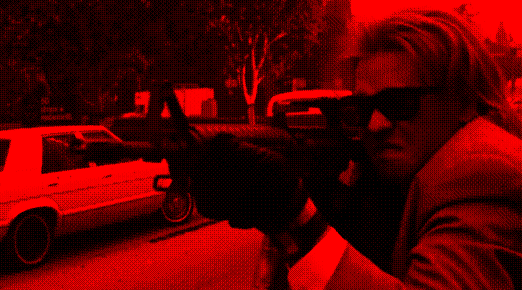
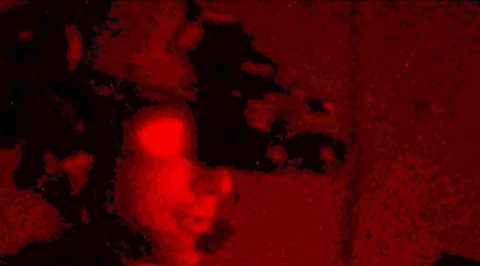

OXBRIER makes thrillers for the thinking man: military science, international espionage, and the criminal underworld. Our proof-of-concept – a $22M action-thriller produced by Mandalay/Sony – will be in theaters this November.
Once considered cultural institutions, studios are now debt-servicing operations1 that happen to make content. The disappearance2 of mid-budget films is a result of tentpole logic – even as demand grows.3
Due to fixed marketing costs, incumbents spend as much marketing a film as they do making it – only to see that investment evaporate after opening weekend. Over $25B in cumulative streaming losses since 20194 prove that distribution doesn't build loyalty.
We're industry and military veterans; authenticity is the center of our business, being the most powerful predictor of success in the genre.
A24 reached $3.5B by making taste the product;5 we're doing the same in a genre with deeper commercial demand and no credible competitor. Our endgame is category dominance – a direct relationship with the audience and total control over the territory we define.
Authentic material has produced the largest, most durable franchises in entertainment. Fleming/Bond. Ludlum/Bourne. Crichton/Jurassic Park.6 Tom Clancy alone represents an estimated $20B across publishing, film, television, and gaming7 and has influenced presidents and policymakers.8
"Clancy didn't invent impossible schemes. He invented things that could happen. Some things that actually have happened over the years bear some resemblance to scenarios that he put together. Tom could sense things and see things in a way that others couldn't."
Colin Powell9
Authenticity enables prestige inside of a commercial genre, which attracts top talent. Michael Mann created Heat based on a detective's pursuit of the real Neil McCauley;14 Pacino and De Niro – the biggest cast pairing in history – came on for half their standard rate.
British SAS trained the cast for months;16 Val Kilmer's perfect mag change is still studied at police and military academies thirty years on.16

A strong package commands the capital stack; discounted rates from top talent, pre-sales, tax credits, and gap financing covers most of each film's budget before our equity deploys. With budget ceilings in the $3M – $30M range, Oxbrier's exposure is capped; we take a portfolio approach and treat IP as a bankable asset.17
Across formats and decades, films rooted in authentic material consistently outperform their budgets, attract prestige talent – often at a discount – and over-index on critical reception.
| Film | Source | Budget | Gross | Multiple | RT | Awards | Talent Discount |
|---|---|---|---|---|---|---|---|
| Heat (1995) | Detective memoir | $60M | $187M | ~3x | 84% | — | Pacino ~50% below quote10 |
| Michael Clayton (2007) | Legal insider | $21.5M | $93M | ~4x | 91% | 7n/1w | Clooney ~90%+ below quote |
| Margin Call (2011) | Wall Street insider | $3.5M | $19.5M | ~5.6x | 87% | 1n | Ensemble at SAG scale11 |
| Tinker Tailor Soldier Spy (2011) | MI6 novel | $21M | $81M | ~4x | 83% | 3n | Ensemble below quote |
| Argo (2012) | CIA operation | $44.5M | $232M | ~5x | 96% | 7n/3w (BP) | — |
| American Sniper (2014) | Navy SEAL memoir | $58M | $548M | ~9x | 72% | 6n/1w | Cooper waived upfront12 |
| Sicario (2015) | Border DEA | $30M | $85M | ~3x | 93% | 3n | Blunt below quote |
| Oppenheimer (2023) | Biography | $100M | $976M | ~10x | 93% | 13n/7w (BP) | Ensemble ~60–80% below quote13 |
We build a direct relationship with our audience through editorial content. Anchored on Substack and distributed across social feeds and podcasts, the platform covers tradecraft, hardware, and dispatches from the field – with long-form analysis on the truth behind the headlines. When a classified operation makes the news, we're publishing insider commentary within hours.

An owned audience creates negotiating leverage at every counterparty – talent, distributors, and financiers.18 Our founders have built and scaled branded editorial operations for two decades;19 applying that to a genre we already own is the easiest part of this business.
In 2007 Tyler Brûlé launched Monocle, a magazine that created the category it served: global affairs, travel, and design under a single editorial identity. That audience became the distribution for Monocle retail shops, cafes, conferences, a 24-hour radio station, and brand partnerships – direct-to-consumer across every channel. Retail now accounts for a quarter of the company's revenue,25 and its online newsletter reaches triple the industry average.26 Brûlé has said explicitly that Monocle is not a magazine – it's a brand that communicates through publishing.
Without a continuous audience relationship, incumbents' brand value resets to zero between releases. Oxbrier's editorial layer retains the audience between releases and generates equity in the process.
The pattern repeats across industries: companies that build a direct audience relationship trade at a premium over those that rent one.
| Entity | Audience Owned | Outcome | Unlock |
|---|---|---|---|
| A24 | Brand loyalty program; 70% viewer return rate20 | $3.5B valuation5 | Theatrical releases sell on brand alone; no single title required |
| The Free Press | 1.5M subscribers, 170K paid | Acquired by Paramount Skydance for $150M in five years21 | Studio paid for the audience, not the content |
| Pirate Wires | 100K+ subscribers; funded by Founders Fund as VP Solana's editorial arm2223 | Shapes Silicon Valley narrative; The Atlantic profiled Solana as the most influential voice in tech media (2024) | VC firm built an editorial operation as a strategic asset, not a cost center |
| NEON | Curatorial identity across social + festival circuit | Longlegs: $128M on sub-$10M budget, zero TV ads24 | Brand replaced the entire P&A budget |
| Daily Wire | 1M+ subscribers via political editorial | Bypasses theaters and streamers entirely | Editorial built the audience; audience became the distribution |
| Crunchyroll | 15M+ paid subscribers in a single genre (anime) | Acquired by Sony for $1.175B (2021) | Subscriber base valued as a distribution asset |
| Red Bull Media House | Brand-owned audience across film, print, digital, events | Operates as a profit center; 2,000+ employees | Editorial finances the brand, not the reverse |
Market Conviction. Incumbents abandoned mid-budget film while audience demand for the genre is growing. The gap is structural and permanent.
Asymmetric Economics. $3–30M budgets with package discounts, pre-sales, tax credits, and gap covering most of each film before equity deploys. Downside capped, upside uncapped (American Sniper: $58M in, $548M out).
Team-Market Fit. The founders' specific knowledge – military service, studio production, global brand strategy – can't be hired or bought. The business compounds that knowledge through leverage and every release deepens the moat.
Traction. $22M action-thriller produced by Mandalay/Sony in theaters this November. Finished product with major studio distribution.
Return Thesis. A compounding platform. Proprietary supply + owned audience + appreciating library + brand equity = A24 trajectory ($3.5B) in a genre with $20B franchise precedents and zero credible competitors.
For confidential materials including full PPM and slate, contact chris@oxbrier.com.
Jev Valles – West Point graduate, GWOT vet, and career entertainment executive – knows how Hollywood makes decisions.
Colin Nagy – Runs Global Brand Strategy at Instagram and Threads, writes for FT and Monocle. Knows how culture and commerce intersect at scale, and how to find the stories that others miss.
Chris Papasadero – Green Beret, studio-produced screenwriter, three exits; built a career straddling the battlefield and the boardroom.
- CNN, February 2022; Stephen Follows, 2017.
- Global Cinema Foundation, 2025: 68,000-respondent study across 15 markets; 46% want more thrillers in theaters. NRG survey, August 2025: audiences prioritize original films. Tubi / Harris Poll, "The Stream 2024," 2,503 respondents: lack of appealing content is the top barrier. MPA / Comscore THEME Report, 2024.
- Disney lost over $11B on streaming from Disney+'s 2019 launch through 2024 before posting its first full-year profit of $574M (Local Broadcast Sales; Fortune, November 2024). Peacock lost $2.7B in 2023 and $1.8B in 2024, with cumulative losses estimated at ~$7B (Comcast quarterly earnings filings). Paramount+ lost $1.66B in 2023; Warner Bros. Discovery's DTC division lost $2.1B in 2022 before reaching marginal profitability in 2023 (Hollywood Reporter). Combined studio streaming losses from 2019–2024 exceed $25B.
- Variety, June 2024: A24 reached a $3.5B valuation via Josh Kushner's Thrive Capital-led financing round, up 40% from the prior round.
- Bond franchise: $7.8B over 25 films, drove Amazon's $8.45B MGM acquisition. Yahoo Finance, 2024. Variety, March 2022: Amazon's $8.45B acquisition of MGM cited Bond as primary driver. Grisham: 300M copies sold, 37 consecutive #1 bestsellers. Accio, 2024. Bourne: $1.64B film franchise; NBCU acquired all rights after seven competitive bids. NBCUniversal, 2025. Jurassic Park: ~$6B across six films (1993–2022). Box Office Mojo.
- Books: 100M+ copies in print. The Fiscal Times, October 2013. Film: $788M theatrical box office. Box Office Mojo. Gaming revenue: Ubisoft's Clancy-branded gaming franchises sold 114M+ units with $7–8B+ estimated lifetime revenue, led by Rainbow Six Siege at $3.5B alone. Game World Observer, October 2024. Gaming IP enterprise value: Tencent's November 2025 €1.16B investment in Ubisoft's Vantage Studios — valued the subsidiary at €3.8B pre-money. Ubisoft press release, November 21, 2025.
- Reagan called The Hunt for Red October "the perfect yarn" and Cold War policymakers cited Clancy as predictive of actual operations. U.S. News, October 2013.
- Colin Powell on Tom Clancy. Time, October 2013.
- Celebrity Net Worth: Pacino's standard quote in 1995 was $10M+; he took $5–8M for Heat.
- Slate, "The Making of Margin Call," January 2011; Collider interview with J.C. Chandor, Sundance 2011: entire cast — Spacey, Irons, Tucci, Bettany, Moore, Quinto — agreed to work at SAG minimum for the $3.5M production shot in 17 days.
- Variety via ScreenRant: Oppenheimer cast salaries — Murphy $10M; Downey Jr. / Damon / Blunt $4M each vs. standard $10–20M quotes.
- Wikipedia, Heat (1995 film): De Niro's character named after the actual thief Neil McCauley.
- Peter Debruge, Variety, October 14, 2025: Michael Mann interview at Festival Lumière.
- Yardbarker: former British SAS trained the Heat cast for three months with live rounds; bank shootout still studied at police academies.
- "Owned distribution" describes channels a brand owns and controls directly — its own websites, newsletters, apps, and social presence — versus paid (advertising) and earned (PR, word of mouth) media. Smart Insights.
- Variety, January 2026: HBO Max / A24 Pay-1 deal renewal — 70% of viewers who watched one A24 film returned for more, averaging four titles.
- Deadline, October 2025: Paramount Skydance acquired The Free Press for $150M (1.5M subscribers, 170K paid).
- Business Insider, July 2024: Pirate Wires, a Founders Fund-backed media company founded by Mike Solana (VP of Founders Fund); over 100,000 subscribers.
- Christopher Beam, "The Most Opinionated Man in America," The Atlantic, October 2024.
- Deadline, July 2024: NEON's Longlegs $128M worldwide on sub-$10M release budget.
- Retail sales of branded goods account for approximately 25% of revenue for Monocle's UK entity (Winkontent Limited). A Media Operator analysis, 2024.
- Monocle's newsletter reaches 92,000 subscribers at a 47% open rate (Monocle media kit, 2024). Industry average for media/publishing is approximately 15–17% (Mailchimp, 2024). A Media Operator, 2024.
All contents proprietary and confidential · Oxbrier LLC 2026